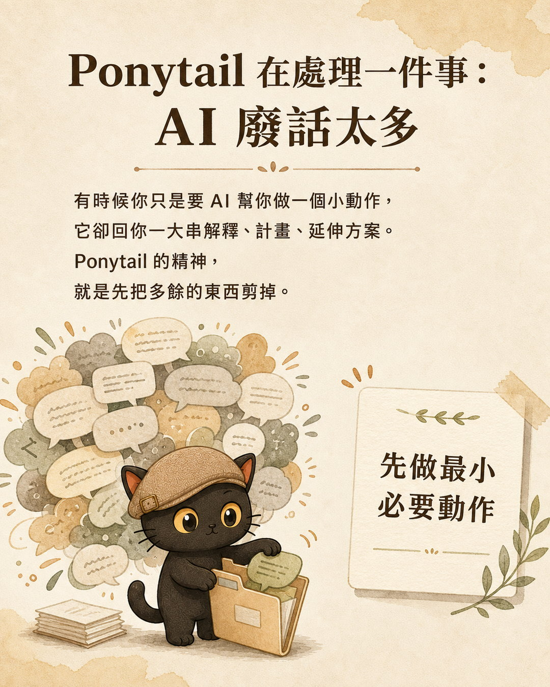
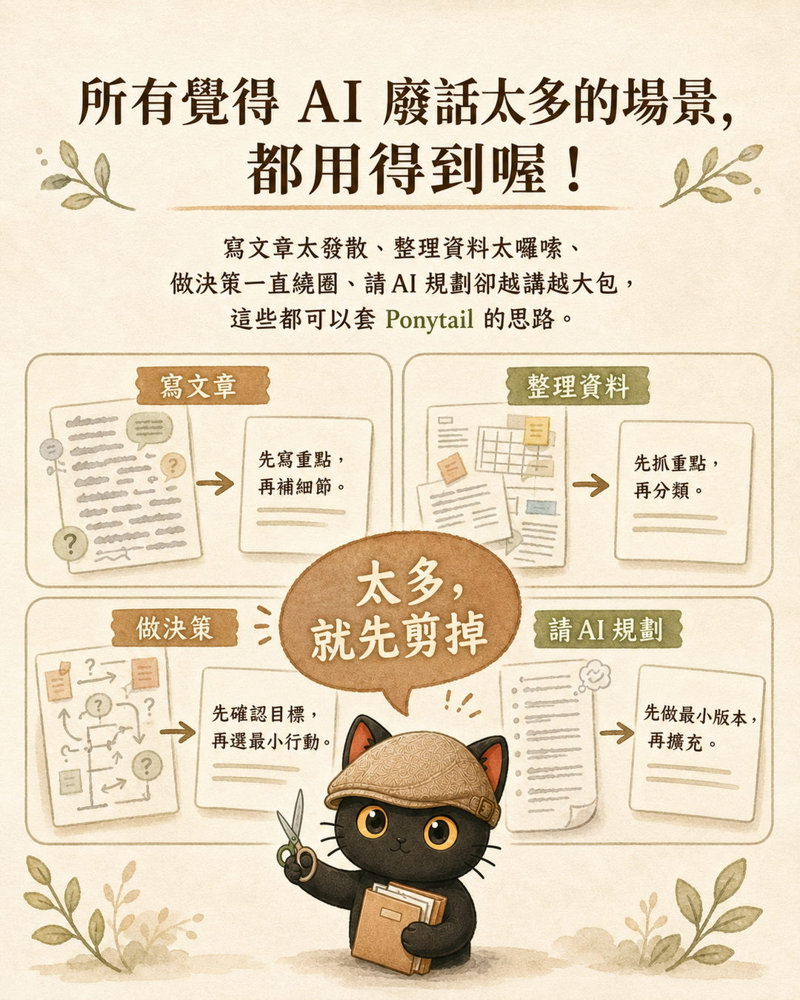
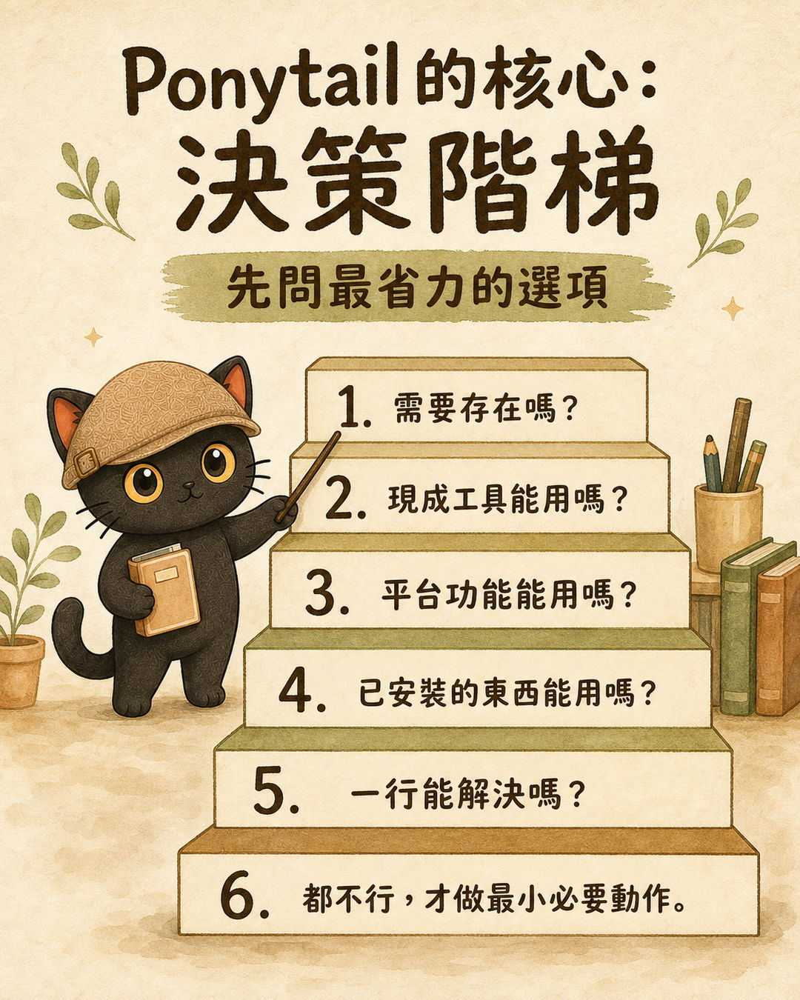
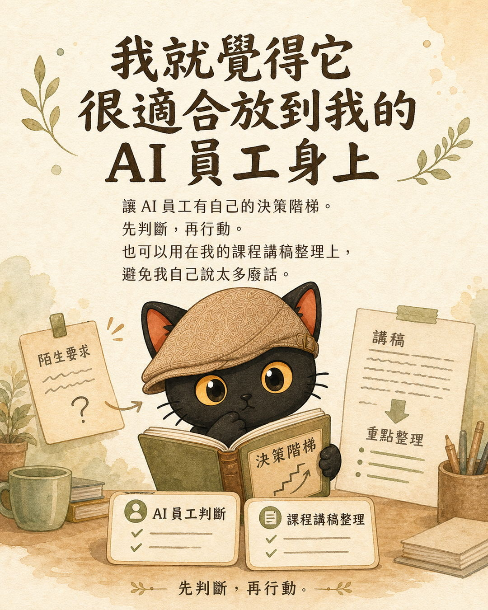
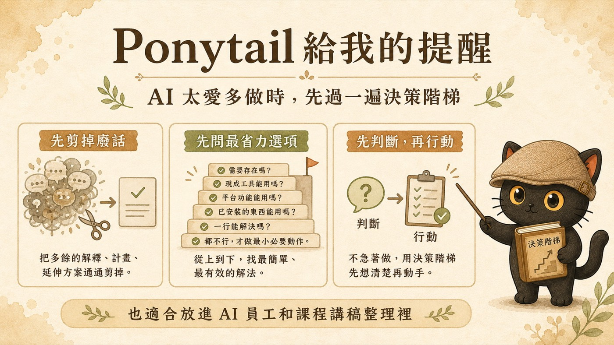

AI 很愛講廢話。你只是要它做一件小事，它回你一大串解釋、計畫、延伸方案。寫文章越寫越發散，整理資料囉嗦冗長，請它規劃一個東西，越講越大包。這篇講一個工程師圈在用的技能包 Ponytail，跟它裡面我最喜歡的「決策階梯」，怎麼用在不寫程式的場景，最後再講一個讓階梯真正生效的關鍵：舉證反轉。
- 每天用 AI 寫文章、整理資料、做決策，但不寫程式的人
- 在訓練自己的 AI 員工，想讓它先判斷再行動的人
- 覺得 AI 的回應總是太長、太發散、抓不到重點的人
- 一個專治「AI 廢話太多」的思路
- 一條可以一格一格打勾的「決策階梯」
- 一個讓階梯真正生效的關鍵：舉證反轉
一、先講問題：AI 很愛講廢話

Ponytail 原本是工程師用來刪掉 AI 過度設計程式碼的技能包。AI 寫程式很愛多做，要一個小功能，它裝套件、包元件、加一堆設定。Ponytail 的精神，就是先把多餘的東西剪掉，先做最小必要的動作。
我看到的當下就想，這哪裡只適用程式碼。

所有你覺得「AI 廢話太多」的場景，都用得到：
- 寫文章太發散，先寫重點，再補細節
- 整理資料太囉嗦，先抓重點，再分類
- 做決策一直繞圈，先確認目標，再選最小行動
- 請 AI 規劃卻越講越大包，先做最小版本，再擴充
共同的那句話是：太多，就先剪掉。
二、Ponytail 的核心：決策階梯

我最喜歡的，是它裡面的「決策階梯」。它的做法很具體，動手之前，從最省力的選項開始問，一階一階往上：
- 這個需要存在嗎？
- 現成工具能用嗎？
- 平台功能能用嗎？
- 已安裝的東西能用嗎？
- 一行能解決嗎？
- 都不行，才做最小必要動作。
只要某一階的答案是「可以」，就停在那裡，不再往上多做。
我喜歡它，是因為它把一句空話變成可以一格一格打勾的動作。你跟 AI 說「請簡潔一點」，這是形容詞，它沒辦法照做。但你給它一條階梯，它每一步都有明確的判斷可以走。

我就覺得它很適合放到我的 AI 員工身上。讓每個 AI 員工都有自己的決策階梯，遇到一個陌生要求，先過一遍判斷，再行動。
它也可以用在我自己身上。我整理課程講稿的時候，最容易說太多廢話。有一條階梯先問「這段真的需要嗎」，講稿就會乾淨很多。
三、藏在階梯裡的引擎：舉證反轉
這一段我要老實說。我整理這個技能包的時候，自己只看到兩件事：它幫我少講廢話，還有它給了我決策階梯。我以為這樣就完整了。後來跟 AI 來回討論，它提醒我，還漏了最關鍵的一個，叫舉證反轉。
一般狀況是，東西預設都留著、都做，你想刪、想砍，得說明理由。舉證的責任在做減法的人身上。
舉證反轉把它倒過來。東西預設都不做，你想加、想做，得先證明非做不可。舉證的責任跑到做加法的人身上。
最好懂的類比是法庭上的無罪推定。法律預設你無罪，要定你的罪，得由檢方舉證，沒有人需要先證明自己清白。
決策階梯之所以有用，靠的就是這條規矩。每一個動作預設都是「不做」，要爬過階梯、拿到許可，才准做。決策階梯是你看得到的樓梯，舉證反轉是「預設站在樓梯底、要往上爬才准動」的那條規矩。少了它，階梯只是擺著好看，大家還是會直接從頂樓開始做。
四、我怎麼把 Ponytail 變成知識工作者版
Ponytail 原版官方 repo 在這裡：DietrichGebert/ponytail ↗。原版的主場是程式碼，它幫工程師把 AI 過度設計的程式碼剪掉，讓 agent 先問「現成的能不能用」「一行能不能解決」。
我把這個思路拿回自己的工作場景，做成一個知識工作者版，叫做「省話一哥」。它處理的對象換成 AI 基礎設施：
- 技能包
- AGENTS.md、SKILL.md 這類規則檔
- Hook
- 自動化機制
- 設定檔
- 交接指令
它的第一步，是先問眼前這東西是內容，還是基礎設施。
所以我會這樣用它：
- 新增一條規則前，先問有沒有現有規則能涵蓋。
- 拆技能包前，先問是不是觸發詞或路由沒有寫清楚。
- 寫交接指令前，先問下一個 AI 真的需要知道哪些事。
- 審自動化機制時，先保留安全紅線，再砍掉重複解釋。
到技能包下載省話一哥 →
一張圖回顧

整理一下：先剪掉廢話，先問最省力的選項，先判斷再行動。
說到底
Ponytail 做的，是把一個資深工程師「看一眼就知道這段不用寫」的判斷，拆解成一條 AI 能穩定照做的規則。那種判斷本來藏在老手腦袋裡，講不清楚，也教不會。
這正好是我每天在做的事。我不寫程式，但我幫人把藏在腦袋裡的經驗和判斷，整理成能累積、能交接、AI 用得上的系統。
想把這套思路放進自己的 AI 工作流？
我每月固定舉辦兩場免費線上講座，分享善用 AI 作為思考夥伴、把知識與經驗整理成提示詞、技能包、知識庫的實戰方法。對 AI 知識管理、隱性知識提煉有興趣，歡迎先從社群開始。
每個月兩場免費講座。
點我加入 Line 社群 ↗